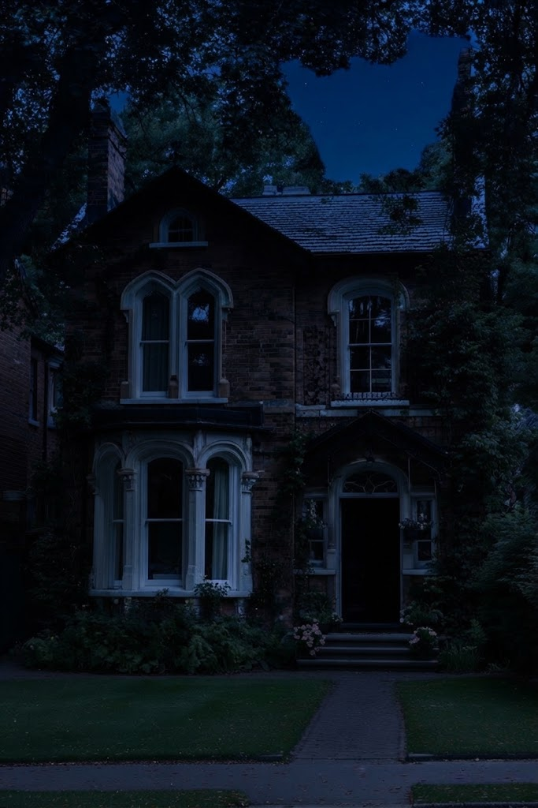
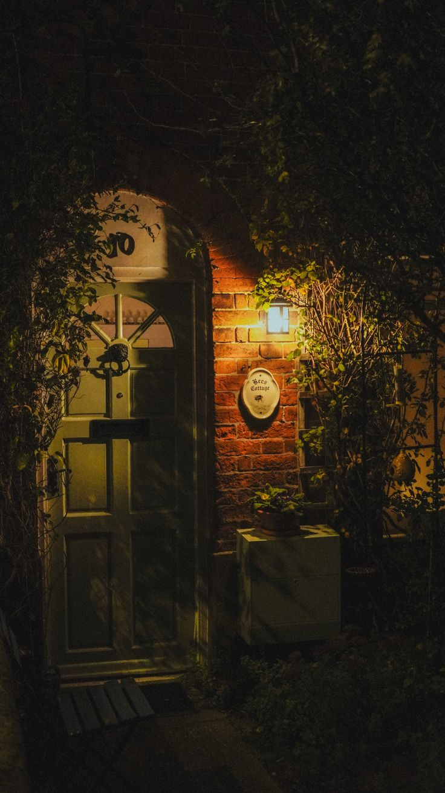

"Dad always said: 'Family is everything. You protect it, no matter what.'
Tonight, I finally understand what he meant."
— Your Journal · First Entry
Welcome, hunter.
For this homework, you're going to write a diary entry — the first entry in what will become your hunter's journal. You'll write it as if it's your own, from your own point of view.
But this is no ordinary night. Tonight, you came home to Ravenwood — the small Kansas town where you grew up — and found something terrible: your parents are missing. Their house is wrecked. There are signs of a struggle. And on the security cameras, you saw something you can't explain.
You'll read one story — The Call. But this story features three branching points where you don't choose where to run, but rather how to react. You can choose to be overwhelmed by terror, stay coldly analytical, or unleash pure anger. Each choice shapes your character's mindset and directly changes how your conversation and action plays out. You'll write your diary based on the emotional path you chose to explore.
Your job: Turn this intense evening into a personal diary entry using your own words, feelings, and voice. Since you can click and read all three emotional paths (A, B, and C), pick the character trait that fits you best for your entry. In your writing, don't just recap the events — explain how you handled the terror, why you spoke to Dean in that specific tone, and how his reaction made you feel. At the end of your journal entry, reflect on the long 3-to-4-hour wait ahead of you at the abandoned Texaco station, and write down your action plan for when the black Impala finally pulls up.
Format
Diary Entry
Length
200–300 words
Branching Points
3 real choices
Extra Tasks
3 (Reading, Vocab, Grammar)
💡 Don't panic! You don't have to be a professional writer. This is about expressing yourself in English — using the vocabulary and grammar we've discussed. Mistakes are welcome here — they help you learn. After you submit, I'll give you detailed feedback.
👥 About the Winchesters
A Quick Introduction
You grew up knowing the Winchesters. They moved to Ravenwood when you were both kids —
right after their mother, Mary, died in a house fire. Their father, John Winchester,
was an old friend of your parents. The two families spent a lot of time together.
John often left Sam and Dean at your house while he went away on "hunting trips" —
at least, that's what everyone called them.
Dean was the older brother — brave, loud, and always getting into trouble.
He loved classic rock, old cars, and had a smile that could get him out of anything.
Sam was the younger one — quiet, thoughtful, and always reading.
He dreamed of going to university and having a normal life.
John, their father, was a serious man. He rarely smiled,
but when he looked at you, it felt like he was seeing something you couldn't.
The Winchesters moved away when you were still young, and you lost touch over the years. However, your father always said: "Friends are never 'former'. Friends are forever. And your parents kept in contact with John and the boys. They even went on hunting trips together from time to time, though you barely ever saw them doing it. You heard that Sam went to Stanford, and that Dean worked with his father. Eventually, you left Ravenwood to study at university, and after graduation, you stayed to work in the big city, living a completely normal life. You never knew what your parents and the Winchesters were actually doing — until tonight.
🩸 The Story So Far
Kansas · The road back to Ravenwood · Late evening
Ravenwood, Kansas
Population: 2,100 · The town you grew up in
Ravenwood is a small town in Kansas. Population: two thousand one hundred.
The kind of place where everybody knows everybody, where the same families have lived
for generations, and where nothing ever really changes. The main street has a diner,
a hardware store, a church, and a gas station. The school is small. The fields stretch
for miles in every direction. At night, the sky is enormous and full of stars.
You grew up here. You know every street, every shortcut, every hiding place.
You know which neighbours have dogs, which ones sleep late, and which ones keep
their porch light on all night. Your parents, Thomas and
Sarah, have lived in this house for almost thirty years.
It's the house you were born in. The house where you learned to walk.
The house where you first heard "Carry On Wayward Son" —
the song your father always played in the car on long drives.
It became your family song.
Your parents were good people. Quiet. Practical. Kind. They never talked much
about their past — and you never asked. But there were always small things.
A jar of salt in the kitchen that never seemed to be used for cooking.
A silver knife in your father's drawer. An old leather-bound book with
strange symbols that you found in the attic once, and never saw again.
When you asked about them, your mother would smile and change the subject.
"It's nothing, sweetheart. Just old things."
For the last four days, your parents haven't been answering their phones. No calls. No texts. No "we're fine, just busy." At first, you thought it was nothing — bad reception, busy schedules, a short trip, maybe they'd gone somewhere with no signal. But by day three, you couldn't shake the feeling that something was wrong. Really wrong.
So this evening, after work, you got in your car and drove the three hours back to Ravenwood.
The road was long and empty. The sky was enormous and full of stars. And then —
as if it knew — the radio started playing "Carry On Wayward Son."
Your family's song. The one your father always played on long drives,
when you were a kid, half-asleep in the back seat.
It was the song that meant home, safe, we're together.
You didn't change the station. You let it play. And by the time you reached
the "Welcome to Ravenwood" sign, your hands had stopped shaking.
You arrived at sunset. The town looked the same as always — quiet, still,
peaceful. You parked in front of your parents' house. The porch light
was off. The front door was slightly open.
And your heart stopped.
"Some doors you open, and the world changes. This was one of them."
🩸 What you found inside the house will change everything. 🩸
In the next section, your story begins and you'll choose how your story continues.
✍️ How to Write Your Diary Entry
Step 1 — Read the story carefully. Below you'll find one long story — The Call. It's your story: what happens when you come home to Ravenwood and find your parents gone. Read it slowly.
Step 2 — Make your choices. Inside the story, there are three branching points — crucial moments where you decide how your character handles the situation. Each choice shapes your emotional state and changes how your conversation plays out. Pick the reactions that feel true to you, and write your diary based on that emotional path. .
Step 3 — Plan your entry. Use the guiding questions to plan what you'll write. Don't skip this step — it makes writing much easier.
Step 4 — Write. Open your notebook (or use the writing box below/Telegram/Google docx). Structure your entry:
Opening: "Dear Diary, ..." — say where you are, why you're writing, and how your evening started.
Middle: Follow the story. Describe what happened, what you saw, what you found, and how you felt at each moment. Mention which choices you made and why.
Closing: Reflect on what happened. What will you do next? Are you scared? Determined? Confused? What did Dean tell you to do?
Step 5 — Check. Use the checklist at the bottom of the page to make sure you didn't forget anything.
Step 6 — Send it. Click "Export Diary" or copy the text and send it to your teacher.
🎬 Your Story — The Call
One story. Three moments where you choose.
You've just walked into your parents' house in Ravenwood. The door is open. Something is wrong. What you do next — that's up to you. But whatever you choose, one thing is certain: by the end of this night, you'll be calling ...
🩸
The Call
Dark · Urgent · Hopeful
Mood: Dark, urgentFocus: Finding the truth, calling for helpBranching: 3 choices, 3 consequences

The house on Cedar Street · Ravenwood, Kansas · Just after sunset
Your situation: Your parents — Thomas and Sarah — haven't answered their phones in four days. The first two days you told yourself it was nothing. Reception, busy schedule, maybe a short trip. On the third day, you started to worry. On the fourth day — today — you got in your car after work and drove the three hours back to Ravenwood. You arrived at sunset. The porch light was off. The front door was slightly open. Inside: overturned furniture, drawers ripped out, broken glass on the floor. On the wall, painted in something dark, a symbol you don't recognize — curved lines, dots, like Arabic writing. You checked the security cameras. And what you saw made your blood run cold: a dark figure, tall and blurred, dragging your parents out the back door at 2:47 AM, three nights ago. Three nights ago. The same night they stopped answering.
📖 Your Evening — Step by Step
5:30 PM
You leave the city. The drive is long — three hours of empty Kansas highway. The sky is huge and full of stars. And then the radio starts playing "Carry On Wayward Son." Your family's song. The one your father always played on long drives. You don't change it. You let it play. And somehow, it calms you down.The radio: "Carry on, my wayward son..."💭 You feel: a strange comfort. Like someone is watching over you.
7:00 PM
You arrive in Ravenwood at sunset. You park in front of your parents' house. The porch light is off. The front door is slightly open. Your heart is pounding.💭 You feel: terrified. Something is very, very wrong.
7:10 PM
You walk inside. The living room is destroyed. Chairs overturned. A lamp broken on the floor. Drawers pulled out. And on the wall, in something dark red, there's a symbol — curved lines, dots, like Arabic writing. You don't recognize it, but it makes your skin crawl. On instinct, you take out your mobile phone and snap a quick photo of the wall. You don't know why, but you feel you might need it later.You whisper: "Mom? Dad?"💭 You feel: sick. There's no answer.
7:25 PM
You check the security cameras. You rewind to 2:47 AM, three nights ago. And there it is. On the screen: a dark figure, tall, blurred, its shape almost human — but not quite. It's dragging two bodies out the back door. 2:47 AM, three nights ago. The same night your parents stopped answering their phones. Then the footage stops. Just... stops.You (to yourself): "What the hell...?"💭 You feel: frozen. You can't move. You can't breathe.
7:40 PM
You try to think. You try to be rational. You take out your phone. You call your parents' phones once more — voicemail, again. You're about to call the police — that's what you do, right? That's what normal people do. But then you stop. Because a memory comes back to you. Your father, years ago, saying it like it was a fact of life: "If something ever happens — anything at all — don't call the police. Police won't help. They won't understand. You deal with it yourself, or you call a friend who can." You always thought it was strange. Your family was normal. Nothing ever happened to you. Why would your father have rules for a crisis? You just realized your father did have rules for a crisis. You never asked him. You wish you had. 💭 You feel: confused. Your father's words never made sense before. Now they feel like a warning.
7:50 PM
You need to think. When you're scared, you write — it's a habit you've had since school. It helps you slow down, focus, breathe. You go to your father's desk looking for a blank notebook or a piece of paper. Instead, you find a loose sheet of paper from his old records. His handwriting is neat, precise. The entry is dated five days ago. It says: "Djinn. Ravenwood..."You (to yourself): "Djinn...? What's a djinn?"💭 You feel: confused. Your father wrote about this. He knew something was coming.
8:00 PM
You search the house. You go to your parents' closet. You know this house — you grew up here. And you know — because you've seen it a hundred times — that your parents always kept something hidden in the back of their closet. The Christmas gifts. The birthday surprises. Your mother's "lucky charms" — small stones and silver coins she believed protected the family. You always thought it was cute. Now your hands move on instinct. You push aside the coats. You find the loose board. And underneath: a box. Inside — your father's journal — the old leather one he always wrote in and you realize that this journal was hidden there for some reason. Next to it lies a silver knife with strange markings, a bag of salt, a handgun, and a photograph. You open the journal. His handwriting is as always precise. The last entry is dated five days ago. It says again: "Djinn. Ravenwood. 3 victims in 40 years. Watching." Below that: a small, hand-drawn symbol. It looks exactly like the one on the wall. 💭 You feel: chills. This is not a hunting photo. This is something else entirely.
8:10 PM
You pick up the old photograph and look at it closely before putting it away. You realize you can't leave any of these things here. On instinct, you wrap the silver knife, the handgun, and the photograph in a cloth and throw them into your bag along with your father's notebook. You take everything with you. But that image stays in your mind: your parents with John and Dean Winchester, standing in front of a black Chevy Impala. Your parents with John and Dean Winchester, standing in front of a black Chevy Impala. All four of them smiling. And behind them — on the ground — something big. Something with fur, long claws, and a face that doesn't belong to any animal you know. Something dead. A creature the size of a bear, but shaped wrong. Too long, too thin. Its mouth is open, showing rows of teeth that don't belong in any animal you've ever seen. It looks like something out of a horror film. But it's real. And your parents are standing next to it, smiling next to it. They are calm, like this is normal. 💭 You feel: frozen. What was your father doing? What was your family?
8:15 PM
And then a memory comes back. You were supposed to be asleep, but you were sitting at the top of the stairs, listening to your parents talking in the kitchen. Your mother said: "They moved again, to another state. What if we lose touch with them?" But your father answered: "Don't worry, everything will be fine. It doesn't matter if they live in the next town, a different state, or another country. It doesn't matter if we don't talk every day. Yes, we are not neighbours anymore. Neighbours can be 'former', but friends are never 'former'. True friends are forever. So it doesn't matter how far away we are from each other. They'll come if we call, and we'll go anywhere if they just phone us." The next morning, your father said almost the same thing to you — but shorter. "You know, if anything ever happens — if you ever need help — you call the Winchesters. John, Dean or Sam. Anytime. They'll come." You nodded. You didn't think about it. You didn't ask why. Now you do think about it.💭 You feel: your father's words come back like they were said yesterday.
8:30 PM
You reach for your phone. But the numbers — the Winchester numbers — you don't have them anymore. You got a new phone one month ago, and when you transferred your contacts, some names didn't make it. Sam and Dean's numbers never transferred. You remember your parents mentioned once — just a few months ago — that the Winchesters had come back to their old house in Ravenwood, for a while. They might still be there. You have to try.💭 You feel: a spark of hope. Not alone. Not yet.
8:45 PM
You walk the two streets to their old house. The porch light is on, and from inside, you can hear something soft — Not voices. Something softer. Like a radio playing very low. You knock, but nobody answers. You knock harder. Still nothing. You think to yourself: someone might be sleeping inside? Or maybe they went out for a minute and left the radio on? You try the front door — it is locked, and the curtains are tightly drawn. You (to yourself): "Someone's here. Or was. Or maybe they are inside right now but sleeping...""💭 You feel: uneasy.
9:00 PM
You walk across the street and knock on the neighbour's door — Mrs. Kline, the old woman who has lived here forever. She opens the door, looking very nervous. She tells you: "The Winchesters haven't been here in weeks. But Dean calls sometimes — checks in on the old neighbourhood." Then she pauses, looks around the dark street, and adds quietly: "Two nights ago, I saw a black van parked across from your parents' house. No plates. Nobody got out. In the morning, it was gone."💭 You feel: a mix of fear and relief. She knew something. She just didn't know what to do with it and she is scared too..
9:15 PM
Mrs. Kline says, "Wait here for a minute, I'll be right back." She goes inside and returns a moment later with a small piece of paper. It is a phone number.
"Dean Winchester," she whispers. "He gave this to me last time he was here. He said — if you ever need anything, call me. I never thought I'd need to." You take the paper, walk back to the Winchesters' porch, and sit down on the cold step. The number is in your hand. The phone is in your pocket. Your thumb hovers over the green button.💭 You feel: your hands are shaking. This is the moment.
🔀 Branching Point 1 — Gathering Your Thoughts
You are sitting on the cold wooden steps of the Winchesters' old porch. Inside, the quiet radio is still whispering. Across the street, Mrs. Kline's window is dark. You are holding the phone with Dean's number. Your thumb is hovering over the green button, but you hesitate. You need a second to understand what is happening. WThe freezing air stings your face as you try to control your breathing. You clutch your mobile phone, and the dark reality of this night finally forces you to look deep into your own mind:
A
You feel overwhelmed by fear. You look at the dark shadows around the house, terrified that the thing from the security camera or the black van might be watching you right now.
— Terror. Your heart is racing, and you just want to hear a friendly voice.
B
You force yourself to stay calm. You think about your father's notebook, the word 'Djinn', the salt, and the hidden photo. You try to analyze it like a puzzle.
— Logic. You block out the emotion and prepare to report the facts clearly.
C
You feel pure anger. Your parents have been lied to, they had dangerous secrets, and the Winchesters are right in the middle of it. You want the truth.
— Fury. You feel betrayed by the people you trusted most.
Consequence 1 (The Weight of Fear): The night feels suffocating. The rustle of the autumn leaves sounds like creeping footsteps. You look down at the old photograph in your jacket pocket — your smiling parents standing next to a dead monster. Your mind screams that you are completely out of your depth. Your hands are shaking so violently that you can barely hold the paper. You press the dial button out of sheer desperation. You just need someone to save you from the dark.
Consequence 1 (The Cold Analytical Mind): You take a deep, measured breath. The cold air stings your lungs, but it helps you focus. You recap the facts in your head: four days missing, a dark creature at 2:47 AM, a strange Arabic-like symbol, a notebook entry about a 'Djinn', a box of hunting gear, and a black van with no plates. This wasn't a random robbery. Your parents knew this could happen. You steady your fingers, grip your mobile phone firmly, and press dial. You are ready to present your case.
Consequence 1 (The Burning Rage): You look at the dark windows of the Winchesters' house. Why didn't your parents tell you? Why did they play the role of a normal, quiet family while hiding silver knives, guns, and horror-movie pictures in the closet? And why did your father tell you to trust these people? You feel like your whole life has been a carefully crafted lie. Your fear is replaced by a hot, dangerous anger. You press the dial button hard. You aren't asking for a favor — you are demanding an explanation.
🔀 Branching Point 2 — Dean Answers
It rings once. Twice. Three times. And then — a click. A voice answers. It is deep, gravelly, and sounds incredibly tired.
Dean (on the phone): "This is Dean."
Your heart leaps into your throat, hammering against your ribs. You swallow hard, push your emotions into your words, and speak into the receiver:
A
"Dean — it's me. Thomas and Sarah's child. My parents are gone. Someone... or something took them — I saw it on the camera. There is a terrifying symbol on the wall, and I just found fresh footprints outside. I found your number from Mrs. Kline. I don't know what to do..."
— Everything at once. Frantic, desperate, completely honest.
B
"Is this Dean WINCHESTER? I am sorry to call so late. My parents are Thomas and Sarah. They have been missing for four days, and their house is destroyed. Mrs. Kline gave me your number. My father told me that if anything ever happened, I should call you."
— Calm and controlled. You swallow your fear and try to keep it together.
C
"Who are you? My parents: Thomas and Sarah, have been missing for four days — something dragged them out of the house, I saw it on the camera. And... Why do my parents have a photo of you and your family with something... something dead in it? What kind of trouble were they in, and what is that bleeding symbol on their living room wall? Why did my father tell me to trust you if I ever needed help? What is going on? I need answers, right now. "
— Aggressive and demanding. You channel your terror into pure anger.
Consequence A (Frantic Appeal): There is a heavy, painful silence on the line. For a second, the only sound you hear is the low, powerful hum of his car engine and the rhythmic clicking of a turn signal on his end. Dean is driving fast. When you finally run out of air and stop talking, you hear him take a slow, sharp breath. "Hey, hey. Slow down. Breathe. Stop talking and just breathe for a second," his voice cuts in, deep and absolutely rock-solid. "Thomas and Sarah's child... Son of a bitch. I knew this day would come, but not like this. Listen to me, you're having a panic attack and I need you with me. Push it down. Your parents are tough, they are survivors, but we are losing time. I need you to be my eyes and ears right now. Tell me exactly what I ask you, nothing else. Where are you calling from right now?" You stammer out that you crossed the street to his old family house, that you're sitting on his porch, and that you heard a strange radio noise inside. You hear him sharply draw in his breath. "Our porch?! Listen to me very carefully: get off that porch right now. Do not look at the windows. Walk straight to your car, lock the doors, and keep the engine running. We are out of time." Hearing his calm, cold authority acts like a physical anchor. The nightmare hasn't changed, but you suddenly feel like you have a general leading you into battle. You don't ask questions; you just move.
Consequence B (Controlled Report): Dean remains silent for a long moment. You hear the faint sound of a lighter flicking, followed by a sharp exhale of smoke. When he speaks, his voice has a dark, appreciative edge to it: "You sound just like your parents. Courteous even when the world is ending. Alright, listen to me. Your mom and dad are tough and might be alive, but if they've been gone for four days, we don't have a second to waste. Where are you calling from right now? Still at your parents' place?" You quickly tell him that you crossed the street and you're currently sitting on his family's old porch, and that you might have heard something inside. You can hear Dean's movement on the other end suddenly freeze. "Our porch? Son of a bitch. Listen to me very carefully," he whispers, and his tone is suddenly deadly serious. "Get off that porch right now. Don't look back, don't try to check the windows. Walk straight to your car, get inside, and lock the doors. Keep the engine running. I need to know — did you smell anything weird out there? Like sulfur or rotten eggs?"
Consequence C (Furious Confrontation): Dean lets out a sharp, bitter laugh that sounds more like a growl. For a second, the only sound on the line is the heavy purr of his car engine. Then, his voice drops: " Listen to me. You sound angry, and you should be. But right now, your anger is useless. You want answers about that photo? You want a lecture on ancient symbols? You want answers? Man, I do want to give them to you. But I am going to be honest — We don't have the time to explain years of secrets right now, and frankly, you don't have the stomach for it yet. Your mom and dad might still be breathing right now, but their lives are being threatened by something you can't even imagine. If you keep wasting minutes shouting at me, they will die. So here is the deal. Shut up, push your panic down, and do exactly what I tell you to stay alive for the next hour. You can either hang up and handle it yourself, or you can listen. So what's it gonna be? You going to listen?" You grip the phone tighter, swallowing your anger. You don't hang up. You tell him you're listening, adding that you're currently sitting on his family's old porch because it had a light on. You hear Dean curse under his breath, his tone turning ice-cold. "Our porch? Damn it. Drop the attitude and move. Get off that porch right now, get into your car, and lock the doors. Keep the engine running. Tell me you're moving. Now." You grip the phone tighter. Your anger is still there, but you realize he is right. You run to your car.
🔀 Branching Point 3 — The Order
You are inside your car now, the doors locked, the engine purring softly in the dark. Through the windshield, the Winchesters' old house looks like a ghost. Dean's voice is still in your ear — sharp, intense, and completely focused. He is about to give you his final instructions, but he needs to know if you can handle it. The silence in the car feels heavy. You swallow hard and finally answer him:
A
"Okay, okay, I'm in the car! I locked it. What do I do now? Should I stay here? What if that black van comes back? My hands are shaking, Dean, I don't think I can drive straight..."
— Terrified and rambling. You lose your focus and let the panic take over.
B
"I'm secure. Doors locked, engine running. I didn't smell sulfur, but I have my father's notebook with me. It says 'Djinn' and has a hand-drawn symbol. There's a motel on Highway 40, Room 12 — my family's old spot. Should I head there or meet you on the road?"
— Analytical and proactive. You offer clear facts, a safe location, and wait for professional orders.
C
"No way. I'm not just sitting here like bait in a trap while you cruise down the highway. I have my father's gun. I'm driving back to my parents' house to look for more clues, whether you like it or not."
— Stubborn and defiant. You argue against his orders and refuse to play the victim.
Consequence A (The Breakdown): You can hear you are babbling, your voice high and thin, the words tripping over each other. On the other end of the line, you hear Dean curse, followed by a heavy slap against his steering wheel. "Hey! Shut up and listen to me!" he barks, his voice slamming through your panic like a brick wall. "Look at me through the phone if you have to, but get your act together! You are Thomas and Sarah's blood, start acting like it. You are going to put the car in drive. You are going to leave Ravenwood right now. Drive East on Route 9. Don't look at the rearview mirror, don't stop for gas, don't stop for anything. There is an old, abandoned Texaco station twenty miles out. Pull in there, keep your headlights off, and wait for a black Impala. Do you copy me? Tell me you copy!" You swallow hard, your throat tight, and choke out a nod. "Good. I'm at least three or four hours away. Hold on. Don't die." The line goes dead. You put your foot on the gas.
Consequence B (The Tactical Choice): There is a brief pause on the line, and you can hear the deep, approving growl of the Impala's engine as Dean shifts gears. "Your dad's notebook? And it says Djinn? Son of a bitch... Thomas did know his stuff. He always was ten steps ahead of everyone," Dean says, his tone shifting from protective to professional. "Forget the motel. If that van belongs to what I think it does, a motel is just a box with no exits. We keep moving. Listen to me: get out of Ravenwood right now. Hit Route 9 and drive East. Don't push the speed limit — you don't want a local cop pulling you over tonight. Exactly twenty miles out, there's an abandoned Texaco gas station. Pull behind the main building, kill the lights, and wait. I'm tracking your signal. If anything follows you, you press the horn and don't stop pressing it. It's going to take me three to four hours to get to you. Just stay alive. See you there." The line clicks off. You check your mirrors, drop the clutch, and smoothly pull away from the curb, your mind completely focused on the mission.
Consequence C (The Clash of Wills): Dean's reaction is instantaneous and deadly cold. "You think you're a badass because you found a handgun in a closet?" he growls, his voice dripping with terrifying authority. "Listen to me, you stubborn piece of work. The thing that took your parents eats bullets for breakfast. You go back into that house with a gun you don't know how to use, and you won't last five minutes. Then I have to find your parents *and* dig your grave. I'm not doing both tonight." He pauses, taking a heavy breath to control his temper. "You want to fight? Fine. But you fight *with* me, not against me. Put the car in drive and get out of that town. Drive East on Route 9. Twenty miles out, there's an old, broken-down Texaco station. You pull in there, hide the car behind the garage, and you wait for me. You try to play the hero before I get there, and I swear I'll leave you to the monsters. Are we clear?" You glare at the phone, your teeth clenched, but you know he is right. "Clear," you spit out. "Good. Hold on: Three to four hours," Dean says, and hangs up. You slam the car into gear and hit the accelerator.
💬 Guiding Questions — Plan Your Diary
Why did you drive back to Ravenwood? When did you realize something was wrong?
What song played on the radio? How did it make you feel?
What did you see when you entered the house? Describe the destruction, the symbol, the feeling in your chest.
What did you find on the cameras? What time was it? How did it make you feel?
Why didn't you call the police? What did your father always say about that?
Why did you open your father's notebook? What did you find inside?
What was in the closet? Describe the photo — and what was behind your parents.
What did you remember about the Winchesters? What did your father say?
Why did you go to their house? What did Mrs. Kline tell you? What did she see?
Before you called Dean (Branching Point 1), what was your main emotion? Did you feel pure terror, cold logic, or burning anger, and what did you think about?
When Dean answered the phone (Branching Point 2), what tone of voice did you use? How did Dean respond to your words, and what dangerous place did he tell you to leave immediately?
During the final part of the call (Branching Point 3), how did you handle his strict instructions? Did you panic, give him facts from your father's notebook, or start an argument with him?
What final order did Dean give you? Where are you driving right now, and how do you feel about the long 3-to-4-hour wait ahead of you in the dark?
💬 Useful Phrases for Your Diary
"I knew something was wrong the moment I saw the open door."
"The house was destroyed. Everything was broken."
"On the cameras, I saw... something. I still can't explain it."
"My father always said: don't call the police. Call a friend. I never understood why — until tonight."
"I do this thing when I'm scared. I write. It helps me focus."
"There was something behind them in the photo. Something that shouldn't exist."
"I don't have their numbers anymore. But I remember what my father said."
"My hands were shaking when I dialed his number."
"I don't know if I trust him. But he's the only person who knows what's going on."
"Tomorrow, everything changes."
💡 Writing Tip: Use Past Simple for the events (I arrived, I saw, I found, I called).
Use Past Continuous for background actions (I was walking through the house when I heard something).
Use Present Perfect for the impact on your life now (Everything has changed. I've lost everything.).
Add sensory details: what did you smell? What did you hear? How did your body feel?
✍️ Example — How to Structure Your Entry
Note: This sample show you how to blend the story's events with your own character's tone. It combines elements of panic, analytical thinking, and the eerie atmosphere of the final call. Use it as a guide for your writing style!
Opening:"Dear Diary, I don't even know how to begin. Four days of silence from my parents. Four days of convincing myself everything was fine. Tonight, I couldn't take it anymore and drove three hours back to Ravenwood. On the empty highway, 'Carry On Wayward Son' started playing on the radio. It was Dad's favorite track. Hearing it felt like a warning and a comfort all at once. By the time I reached the town sign, my hands had stopped shaking. But the moment I saw their dark house with the front door slightly open... my heart just stopped."
Middle:"The living room was completely trashed—shattered glass, overturned chairs. And on the wall, painted in something dark red, was a symbol I'd never seen before. The security footage was even worse: a tall, blurred shadow dragging them out at 2:47 AM. Dad's voice echoed in my head, telling me never to call the police. Instead, I found his old leather journal. The last entry read: 'Djinn. Ravenwood. Watching.' In their closet, hidden under a loose board, I discovered a box with a silver knife, a gun, and an old photograph of my parents with John and Dean Winchester, smiling next to a literal dead monster. Everything I believed about my family was a lie. I ran to the Winchesters' empty house, and Mrs. Kline gave me Dean's mobile number. Sitting on their cold porch, my mind was racing with [Insert your Branching Point 1 emotion here—were you terrified, angry, or logical?]. I gripped the phone and pressed dial..."
Closing:"When Dean finally picked up, his voice was deep and gravelly. I couldn't hide my emotions, so I [Describe your tone from Branching Point 2—did you slam him with questions, report the facts, or panic?]. He listened, his car engine roaring in the background, and then he completely shocked me. He told me to get off the porch immediately and lock myself inside my car. He said he was three to four hours away and ordered me to drive East on Route 9 to an old, abandoned Texaco station. So, here I am. It's past midnight. I'm parked in the pitch black behind a broken-down garage, my engine purring softly, staring into the fog. Dean is on his way. My hands are still shaking, but my mind is set. I'm going to get my parents back. Wish me luck, Diary."
✏️ Write Your Diary Entry Here
Dear Diary,..
Before you write, decide:
Which emotional path did you choose? Option A: Panic & Fear · Option B: Cold Logic · or Option C: Furious Confrontation?
Then write your diary entry in the box below. Start with "Dear Diary," — just like a real journal. And remember: you are not just retelling the events. You are choosing your hunter's personality and writing about what it felt like to face the dark alone, and how you handled the tense call with Dean.
📝 Your Diary Entry
Words: 0 / 300 · Minimum: 200
💡 Writing Tips:
Use the past simple for what happened (I arrived, I met, I saw).
Use the past continuous for background actions (I was unpacking when...).
Use present perfect for the impact on your life now (Everything has changed. I've lost everything.).
Use sensory details: what did you see, hear, smell, feel?
Don't worry about perfection. Write like you speak — naturally.
✅ Before You Submit — Checklist
Read each point and tick the box if you did it
📤 Save Your Diary Entry
Just finished your diary entry? You can save it now — or keep working and save everything at the very end.
Click "Export Diary" to save only your diary entry as a text file. Click "Copy to Clipboard" to copy it and paste it anywhere (email, Telegram, Google Docs, etc.).
💡 Note: If you've already done the Extra Tasks below, don't use this button — scroll to the bottom and use the full "Export Everything" button instead.
📖 Extra Task 1 — Reading Comprehension & Reactions

Door to your Extra Tasks
What to do: Read the story and explore its emotional paths again. Then answer the questions below to test your attention to detail.
For each question, choose the best option. Then click "Check" to see if you were right, or "Show Model Answer" to see a full explanation.
Part A — Comprehension (Understanding the Story)
A1 — What was the last entry in your father's journal?
Model Answer:b) "Djinn. Ravenwood. 3 victims in 40 years. Watching."
Why? In the text (7:50 PM), you open your father's old leather notebook and find this exact entry dated five days ago, right next to a hand-drawn symbol that matches the bleeding mark on the living room wall.
A2 — What did the security cameras show?
Model Answer:b) A tall, blurred, dark figure dragging your parents out at 2:47 AM, three nights ago.
Why? The footage from three nights ago shows an almost human shape taking Thomas and Sarah out the back door, which perfectly explains why they stopped answering their phones four days ago.
A3 — What crucial piece of evidence did Mrs. Kline mention?
Model Answer:c) She saw a black van with no licence plates parked across from your parents' house two nights ago.
Why? During your conversation at 9:00 PM, the old neighbor confesses that she noticed a mysterious van with no plates that sat there all night and disappeared by morning.
A4 — Where does Dean Winchester order you to go at the end of the call?
Model Answer:a) To an old, abandoned Texaco gas station twenty miles out on Route 9.
Why? No matter which emotional tone you used during the call, Dean's ultimate tactical order was the same: leave the compromised area immediately, drive East on Route 9, and wait for his black Impala at the old Texaco station.
Part B — Reactions (How Would You Respond?)
Read each situation and choose the best response — a, b, or c. More than one answer may be possible, but one is the most natural for a hunter's survival.
B1 — You've just discovered your father's hidden box: a silver knife, a bag of salt, a gun, and a photo of him with John Winchester. What do you do?
Best Answer:b) You take everything with you. Whatever this is, it's important.
Why? Because your parents are missing, and these items were clearly hidden for a reason. The silver knife, the salt, the gun — they're not random. They're tools. Your father left them where you could find them in a crisis. Option a would waste this crucial clue. Option c would be dangerous — your father explicitly warned you that the police won't understand this world, and you might attract unwanted attention.
B2 — Dean asks: "I need to know something first. Did you touch anything in the house? The bleeding symbol on the wall?" What do you say?
Best Answer:b) "No. I didn't touch it. I just took photos with my phone."
Why? Because in the dangerous world of supernatural entities, touching unknown marks can be fatal. Symbols can carry curses, traces, or active magic. Dean is asking because if you made physical contact with that dark red writing, the entity might now be tracking your location. Being observant and cautious shows Dean that you can stay alive.
B3 — You are sitting on the Winchesters' old porch at 8:45 PM and hear a radio softly playing inside a locked, dark house. What is the smartest move?
Best Answer:b) You knock firmly, try the front door, and when nobody answers, you keep your distance and look for an alternative clue or help.
Why? Breaking into a dark, locked house where your parents' old friends suddenly vanished is highly reckless, especially since you just saw a creature on camera. However, ignoring the sound isn't an option either—you need answers. Investigating safely, which leads you to cross the street and talk to Mrs. Kline, is the perfect tactical balance.
B4 — Dean barks at you over the phone: "Drop the attitude and move! Get off that porch right now, get into your car, and lock the doors." How should you handle this?
Best Answer:b) You swallow your pride, listen to his tone, and run straight to your vehicle because he obviously knows something you don't.
Why? This is a lesson in crisis management. You might be furious or terrified, but Dean is the professional hunter here. If his gravelly voice suddenly turns deadly serious and he drops all pleasantries, it means you are in immediate physical danger. Arguing or hanging up out of pride (Options a and c) can get you killed before the night even begins.
B5 — It's midnight. You are parked behind an abandoned Texaco gas station on empty Route 9. The engine is purring, the headlights are off, and you face a tense 3-to-4-hour wait in total darkness. What is your strategy?
Best Answer:b) You keep your doors locked, stay fully awake, watch the fog, and open your diary to process your thoughts while keeping your hand near the car horn.
Why? Because you are hiding in a compromised situation. Falling asleep (Option a) makes you completely vulnerable to whatever dragged your parents away. Wandering into a creepy, abandoned garage alone at midnight (Option c) violates Dean's explicit safety orders. Staying inside your locked metal fortress, writing down your thoughts, and keeping an eye on the environment is the exact mindset of a true survivor.
📚 Extra Task 2 — Vocabulary Practice
Below are words and phrases from our text.
Complete the two exercises below: Match and Fill in the Gaps.
A — Match the Word or Phrase to Its Meaning
Match each word or cinematic phrase (1–15) with its meaning (a–o). Write the correct letter (a–o) in the input box next to the word.
Words & Phrases
1.footage
2.djinn
3.wrecked
4.blurred
5.sulfur
6.out of your depth
7.measured breath
8.rock-solid
9.panic attack
10.anchor
11.courteous
12.frankly
13.heart in your mouth
14.compromised
15.get your act together
Meanings (mixed order)
completely destroyed, messy, or trashed
a chemical element with a sharp smell like struck matches
recorded video or film material from a camera
completely firm, steady, and impossible to shake or break
feeling that you are in a situation too difficult for you to handle
a supernatural creature from folklore that leaves strange marks
an idiom meaning you feel extreme fear or nervousness
not clear; difficult to see or read
a sudden, intense feeling of fear that makes it hard to breathe
very polite, respectful, and well-mannered
a slow, controlled intake of air used to calm down
no longer safe; exposed to danger or a crime scene
something or someone that gives you support and makes you feel safe
an idiom meaning to control your emotions and start acting rationally
honest and direct; to tell the truth plainly
B — Fill in the Gaps
Complete each sentence with the correct word or cinematic phrase from the list below. Use each item only once.
Words and Phrases to use (in mixed order):
wrecked · footage · blurred · djinn · sulfur · out of your depth · measured breath · rock-solid · panic attack · anchor · courteous · frankly · heart in your mouth · compromised
✏️ Complete the sentences
1. I walked into the living room and gasped; the entire house was completely ____________, with glass and overturned furniture everywhere.
2. When I checked the security ____________, my blood ran cold as I watched a dark silhouette take my parents away at 2:47 AM.
3. The mysterious creature's face on the monitor was completely ____________, making it impossible to see its human features.
4. According to my father's hidden leather journal, the monster hunted in Ravenwood is called a ____________.
5. Near the empty van with no licence plates, I caught a sharp, chemical scent of ____________ that smelled exactly like struck matches.
6. Standing alone in that dark, quiet street, I felt completely ____________, realizing this nightmare was way too dangerous for a normal civilian.
7. Before pressing the green button to call the strange number, I took a slow, ____________ to calm my racing mind.
8. When Dean Winchester finally answered, his gravelly voice sounded calm and ____________, showing absolutely no signs of fear.
9. My hands were shaking violently on the porch; I was having a real ____________ and just needed a friendly voice to save me.
10. Dean's professional authority acted like a psychological ____________, keeping me grounded when the whole world was falling apart.
11. Dean even praised my calm report, saying I sounded just like my parents—____________ and polite even during a crisis.
12. Dean didn't sugarcoat the situation; he told me ____________ that he had no time for a lecture and needed me to obey his orders.
13. I listened to his terrifying description of the monster with my ____________, my knees trembling in the dark.
14. Dean yelled at me to leave the porch immediately because that abandoned house was completely ____________ and unsafe.
📐 Extra Task 3 — Grammar Practice
Below are 5 grammar points from the scenarios. Read each explanation, study the examples, and then complete the exercises.
G1 — "Might" (Modal Verb for Possibility)
From the text:
"You feel you might need it later. Your parents might still be alive and etc."
💡 Explanation
"Might" is a modal verb. We use might + infinitive (without "to") to talk about something that is possible, but not certain.
Will = 100% sure. "I will become a hunter." (certain)
May = 70% sure. "I may become a hunter." (likely)
Might = 40% sure. "I might become a hunter." (possible, but not likely)
In the text, Dean means: "It's possible your parents are still alive — but I'm not sure. We have to try."
Structure: Subject + might + base verb
Examples:
The djinn might be hiding in the woods. (Not sure.)
She might not have survived the attack. (Negative.)
Might I ask you a question? (Formal, polite question.)
✏️ Exercise — Complete with "might" + the correct verb
1. I'm not sure, but the symbol ___________ (be) a djinn mark.
2. My parents ___________ (not / be) alive. But I have to hope.
3. The djinn ___________ (come) back tonight. We have to be ready.
4. If we're lucky, we ___________ (find) them before sunrise.
5. I ___________ (not / survive) if I go in alone.
G2 — "Do / Does / Did" (Emphatic)
From the text:
"Now you dothink about it. I do believe you. But we need proof."
💡 Explanation
Normally, the Present Simple of believe is: "I believe you."
But when we want to emphasize that something is really true — when we're contradicting or insisting — we add do / does / did before the verb.
Structure: Subject + do/does/did + base verb
Examples:
I do like coffee. (I really like it — maybe you thought I didn't.)
She does care about you. (It's true — she really cares.)
We did finish the project on time. (Yes, we really did.)
In the text, Dean is saying: "I really believe you — but I still need proof." The word do makes the statement stronger.
✏️ Exercise — Add emphasis with do/does/did
1. (You think I'm not scared, but) I ___________ feel scared.
2. (He really cares about the family) He ___________ care about us.
3. (Yes, I really called Dean) I ___________ call him last night.
4. (You look surprised — but the symbol really is a djinn mark) The symbol ___________ mean danger.
5. (I insist that we really need help) We ___________ need help.
G3 — Passive Voice
From the text:
"The journal was hidden there for some reason".
💡 Explanation
This is the Passive Voice. In passive sentences, the subject receives the action — it doesn't do the action.
Structure: Subject + be + past participle (+ by + doer)
Compare:
Active:My father hid the journal. (My father is the doer.)
Passive:The journal was hidden. (The journal receives the action.)
We use the passive when:
The doer is unknown: My parents were taken. (We don't know who took them.)
The doer is obvious: The house was wrecked. (Obviously by the monster.)
The doer is not important: The symbol was drawn in blood.
We want to focus on the receiver: The journal was hidden.
Passive in different tenses:
Present: The journal is hidden.
Past: The journal was hidden.
Future: The journal will be hidden.
Present Perfect: The journal has been hidden.
✏️ Exercise — Rewrite in the passive voice
1. Someone took my parents. → My parents ___________
2. My father hid the journal under the floorboard. → The journal ___________ under the floorboard.
3. The djinn drew the symbol on the wall. → The symbol ___________ on the wall.
4. They will kill the djinn with silver. → The djinn ___________ with silver.
5. Someone has cleaned the house. → The house ___________
📤 Submit Everything — Final Step
You made it to the end! 🎉
This button saves everything:
✍️ Your Diary Entry
📖 Your Reading Comprehension answers (Extra Task 1 — Part A)
💬 Your Reactions answers (Extra Task 1 — Part B)
📚 Your Vocabulary answers (Extra Task 2)
📐 Your Grammar answers (Extra Task 3)
✅ Your Checklist
Click "Export Everything" to save it all as one text file. Then send the file to your teacher.
💡 Self-check: The Export file also shows you which answers were correct and which were not, so you can review before sending. Your teacher will still check everything and give feedback.